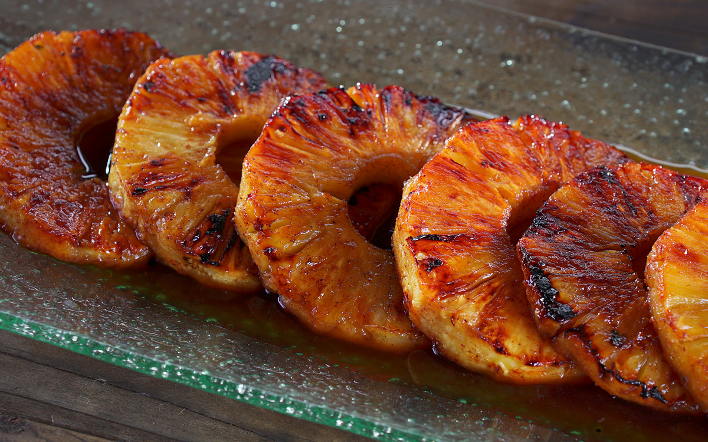

Brazilian Grilled Pineaple

Description
A sweet, delicious brazilian dish that is loved by everyone who has the
opportunity to eat it. Brazilian Grilled Pineapple is cut pineapple
coated with sugar and cinnamon, basted with a brown sugar cinnamon
butter glaze while being grilled.
Ingredients
- 1 cup brown sugar
- 2 teaspoons ground cinnamon
- 1 pineapple - peeled, cored, and cut into 6 wedges
Steps
-
Preheat an outdoor grill for medium-high heat and lightly oil
the grate.
- Whisk brown sugar and cinnamon together in a bowl.
-
Transfer into a large resealable plastic bag.
Add pineapple wedges to the bag; shake well to coat each wedge.
-
Grill pineapple wedges on the preheated grill until heated through,
3 to 5 minutes per side.